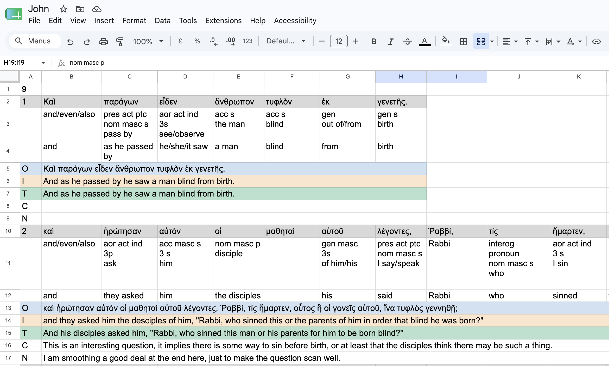

Open Source · Free · MIT licence
Greek NT practice sheets,
built in seconds
greeksheet creates beautifully formatted Google Sheets for verse-by-verse translation practice — fetching text directly from greekbible.com. No setup, no secrets file. Just download and run.

-
Open Terminal — press ⌘ Space, type
Terminal, press Return. Or: Finder → Applications → Utilities → Terminal. -
Navigate to your Downloads folder:
cd ~/Downloads
-
Make the binary executable:
chmod +x greeksheet-darwin-arm64
-
Run greeksheet:
./greeksheet-darwin-arm64 -ref "John 1:1-14" -title "John 1"
First launch only: macOS may block the binary. Open System Settings → Privacy & Security and click Open Anyway.
-
Open Command Prompt — press Win + R,
type
cmd, press Enter. Or: search Command Prompt in the Start menu. -
Navigate to your Downloads folder:
cd %USERPROFILE%\Downloads
-
Run greeksheet:
greeksheet-windows-amd64.exe -ref "John 1:1-14" -title "John 1"
Everything you need. Nothing you don't.
-
No setup required
No Google Cloud project. No secrets file. OAuth credentials are compiled into the binary — safe by design for desktop apps.
-
One-time sign-in
The browser opens once so you can click Allow. After that the token is cached locally and every run is completely silent.
-
Fetch or paste
Fetch Greek text directly from greekbible.com with
-ref "John 1:1-14", or point at a text file with-input. No copy-pasting required. -
Per-verse layout
Each verse gets Greek text, two parsing rows, an Original row, Intermediary, final Translation, Commentary, and Notes — everything you need in one place.
From command line to Google Sheets in four steps
-
Download
Grab the binary for your platform from the latest release. macOS users:
chmod +xthen run. On first launch, approve it in System Settings → Privacy & Security. -
Run
Pass a reference range or an input file:
./greeksheet -ref "John 1:1-14" \ -title "John 1"
-
Authorise
Your browser opens the Google consent screen. Click Allow. The tab shows "Authentication successful" and closes. This happens only once — the token is cached for future runs.
-
Open your sheet
greeksheet prints the link:
Done! Open your sheet at: https://docs.google.com/…
Common Questions
Where is my auth token stored?
After you approve access, the token is written to:
- macOS:
~/Library/Application Support/greeksheet/token.json - Linux:
~/.config/greeksheet/token.json - Windows:
%APPDATA%\greeksheet\token.json
The file is readable only by your user account (mode 0600).
How do I revoke access or sign out?
Delete the token file listed above. The next run will open the browser again. You can also revoke at any time from myaccount.google.com/permissions — look for greeksheet in the list of connected apps.
Will it access my existing Google Drive files?
No. greeksheet only creates new spreadsheets (or adds tabs to one
you explicitly point it at with -sheet-id). It requests
Drive scope solely to let you place new sheets inside a specific
folder with -folder-id. It never reads, lists, or modifies
any of your existing files.
macOS says the app is from an unidentified developer.
This is standard macOS Gatekeeper behaviour for unsigned binaries. To run it:
- Open System Settings → Privacy & Security.
- Scroll down to the section about the blocked app and click Open Anyway.
- Confirm in the dialog that appears.
You only need to do this once per binary version.
What happens when my token expires?
Google issues a refresh token alongside the access token. Access tokens expire after one hour, but greeksheet passes the refresh token to the OAuth2 library, which renews silently without opening a browser. Refresh tokens themselves are valid for approximately six months of inactivity. If yours expires, the next run simply opens the browser once more.